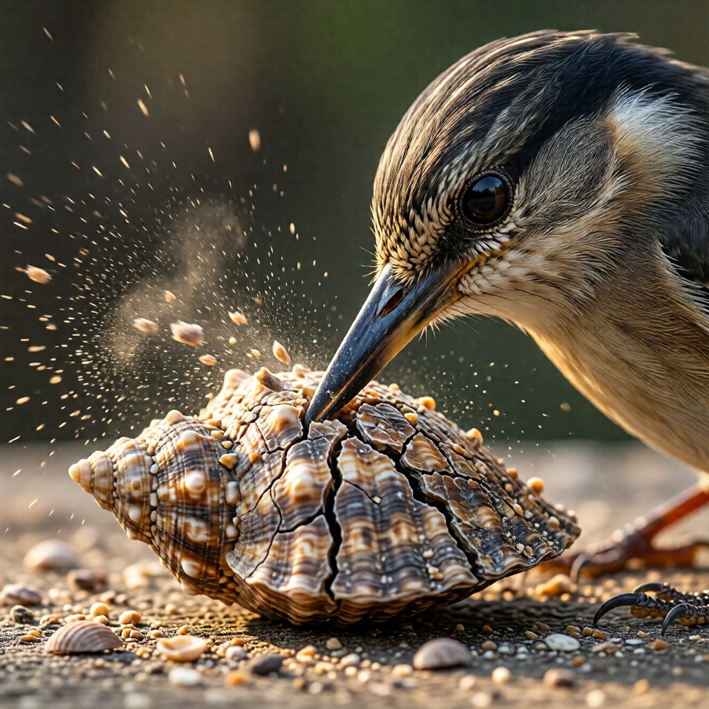

Дневные удары: микро-пробои

Философия микро-пробоев
Ты не вылупишься за один день. Не будет момента, когда ты сел в позу лотоса — и БАМ — просветление.
Вылупление — это тысячи маленьких моментов. Микро-трещины, которые накапливаются.
Каждый раз, когда ты ловишь себя на автопилоте — микро-пробой. Каждый раз, когда видишь паттерн — микро-пробой. Каждый раз, когда выбираешь осознанность вместо реакции — микро-пробой.
Эта глава — о том, как создавать эти моменты в течение обычного дня.
Техника 1: СТОП
Простейшая и мощнейшая.
Несколько раз в день — останавливайся. Полностью. На 10-30 секунд.
Можно по таймеру. Можно привязать к действию (каждый раз, когда берёшь телефон). Можно рандомно.
В момент СТОП:
- Замри физически
- Заметь позу тела
- Заметь дыхание
- Заметь мысли
- Спроси: «Кто это делает?»
Потом — продолжай. Но что-то изменилось. Ты вышел из автопилота хотя бы на секунду.
Техника 2: Три вдоха
Ещё проще.
В любой момент — три осознанных вдоха.
Не специальных. Не глубоких (хотя можно). Просто — осознанных.
Вдох — знаю, что вдыхаю. Выдох — знаю, что выдыхаю.
Три раза.
Это занимает 15 секунд. Можно делать где угодно. Никто не заметит.
Но ты — выпал из матрицы на 15 секунд. Это — микро-пробой.
Техника 3: Наблюдение за ролями
В течение дня ты играешь роли. Много ролей.
На работе — одна. Дома — другая. С друзьями — третья.
Практика: замечай смену ролей.
«О, сейчас я — профессионал. Голос изменился. Осанка изменилась.» «О, сейчас я — хороший сын/дочь. Другой тон.» «О, сейчас я — крутой чувак. Маска надета.»
Не осуждай. Не пытайся снять маску. Просто — заметь.
Каждое замечание — удар клювом.
Техника 4: Вопрос в момент реакции
Когда что-то вызывает сильную реакцию — раздражение, обиду, страх, радость — задай вопрос:
«Кто реагирует?»Не «почему я реагирую» — это уведёт в анализ. Именно «кто».
Этот вопрос создаёт пространство между тобой и реакцией. В этом пространстве — свобода.
Техника 5: Неделание
Парадоксальная практика.
Выбери одно привычное действие в день — и не делай его.
- Обычно проверяешь телефон в лифте — не проверяй.
- Обычно заполняешь паузу разговором — помолчи.
- Обычно включаешь музыку в машине — езжай в тишине.
Неделание обнажает автоматизм. Ты видишь, насколько ты — машина. И это — пробой.
Техника 6: Осознанное действие
Противоположность неделанию.
Выбери одно действие в день — и сделай его полностью осознанно.
Чистишь зубы — только чистишь зубы. Не думаешь о дне. Не планируешь. Чувствуешь щётку, вкус пасты, движения руки.
Идёшь — только идёшь. Каждый шаг — осознанный.
Одно действие в день. Больше не нужно.
Техника 7: Благодарность скорлупе
Когда что-то раздражает, ограничивает, мешает — вместо реакции:
«Спасибо, скорлупа. Ты показываешь мне, где я ещё привязан.»Это не капитуляция. Это — алхимия. Превращаешь раздражение в топливо.
Как интегрировать в день
Не пытайся делать всё сразу. Выбери одну технику на неделю.
Неделя 1: СТОП (3 раза в день) Неделя 2: Три вдоха (5 раз в день) Неделя 3: Наблюдение за ролями Неделя 4: Вопрос при реакцииПотом — комбинируй. Найди, что работает для тебя.
Триггеры для практики
Чтобы не забывать — привяжи практику к триггерам:
- Телефон звонит → три вдоха перед ответом
- Красный свет → СТОП
- Вход в помещение → заметь, какую роль надеваешь
- Перед едой → момент осознанности
- Раздражение → «Кто реагирует?»
Триггер → практика. Автоматизм на службе осознанности.
Чего ожидать
В начале — будешь забывать. Постоянно. Это нормально.
Потом — будешь вспоминать постфактум. «О, я мог бы сделать СТОП, но не сделал». Это — прогресс.
Потом — будешь ловить в моменте. Иногда.
Потом — станет естественнее. Не всегда, но чаще.
И в какой-то момент заметишь: фоновая осознанность выросла. Ты чаще «здесь», даже когда не практикуешь специально.
Это — накопительный эффект микро-пробоев.
Предупреждение
Микро-практики — не замена глубокой работе. Это — дополнение.
Если ты только делаешь СТОП три раза в день и думаешь, что этого достаточно — скорлупа смеётся.
Микро-пробои создают трещины. Но через трещины должен проходить свет. А для этого нужна и глубокая работа тоже.
Итог
День — поле для практики. Каждый момент — возможность для микро-пробоя.
Тысяча маленьких ударов — и скорлупа ослабевает.
Не жди особых условий. Не жди ретрита. Не жди «правильного времени».
Время — сейчас. Место — здесь. Практика — в следующем вдохе.